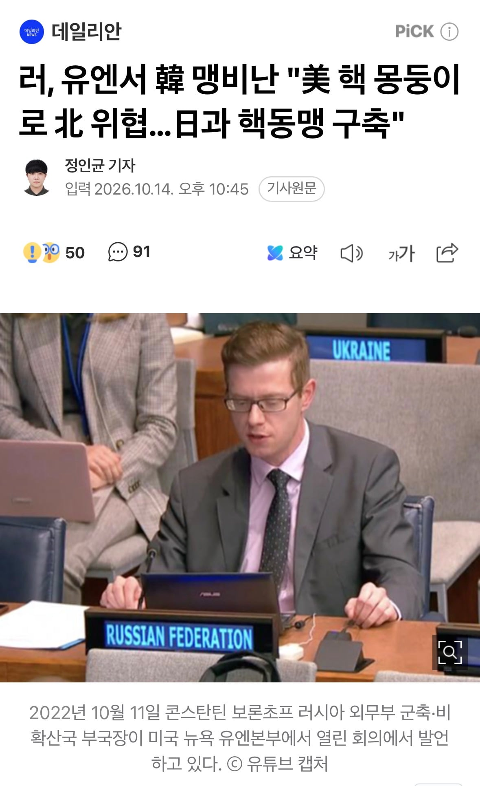

아오 종북새끼들

아오 종북새끼들
러시아가 진짜 병력이 존나 절실한데
어중이 떠중이도 아니고 우리나라로 치면 특급전사는 달고 있는 애들로 2만명 단위로 지원해주니까...
푸틴은 이미 정은이 한번 해줬을 수도 있음
캬 몇 명짜리 발언일까
예?
일본은 왜?
?
일본?
레드팀이 레드팀 짓 하는 건 올 게 왔구나 느낌인데 블루팀 대장이던 새끼가 트롤짓 하니까 더 골아프네
2022년 기사인데 지금이랑 무슨 관련이 있어서 이렇게 올린거임?
…? 어제 밤 10시 기사인데?
난 또 과거를 회상하는 기사인줄..
사진이 2022년 기사는 2026년
그냥 평소의 지랄이잖아
로씨아가 돼지정은이의 쫄마니짓을 하다니 ㄷㄷㄷ
미국 핵이 불만이라니 신토불이 국산 핵으로 맞서면 되겠네
애초에 유엔에 중국이나 러시아같은곳을 끼워주면 안되지 않았을까 의미가사라짐
국산 핵몽둥이를 보여줘야겠네
미친 좆거지 슬라브새끼들은 쌍방에서 지랄이네ㅋㅋ
우크라가 비호감작 하니까 너네도 질수없다 이거냐?ㅋㅋㅋㅋ
북한 동반자 새끼 아니랄까봐 ㅋㅋㅋㅋㅋㅋㅋ
우크라한테 뺨 맞고 러시아에서도 뺨 맞으면 뭐 어카노
도시락이나 사 무
그는 "한국은 1958년부터 1991년까지 자국 영토에 핵무기를 배치했고 1976년부터 현재까지 미국과 함께 북한 도시들에 대한 핵 공격과 융단폭격을 연습하는 훈련을 실시해 왔다"고 주장했다.
이어 "서울은 이러한 오랜 공격적 정책을 바탕으로 워싱턴, 도쿄와 함께 역내 국가들을 겨냥한 사실상의 핵동맹을 구축하고 있다"고 비난했다.
...내가 뭘읽은거냐이거ㅋㅋㅋㅋㅋ
폰은정에 이어 폰핵무기인가ㅋㅋㅋㅋㅋ
우리 언제 핵보유국됨?ㅋㅋㅋㅋ
주한미군 전술핵 말하는거임. 실제로 있었음.
러시아는 원래 한결같았음 슬라브 외교 특임 이게 우크라도 그렇고
러맘들 눈물 펑펑 쏟겠구만 ㅋㅋㅋ 뭔 속으로는 한국을 제일 사랑하는 나라 이지랄 하더니
하여튼 우구라나 러북북괴나 아주 우리한테만 ㅈㄹㅈㄹ이네. 그냥 ㅅㅂ 핵무장 가자.
우크라같은 만만한 나라한테만 생 쥐롤을 하시던 분들
북중러 앞에선 절~~~대 입도 뻥끗 못하죠?
여기서도 그너무 '굴종하지 않고 당당한 자주외교'좀 보여주시지??
병력지원하니까 존나 빨아주네 씨발